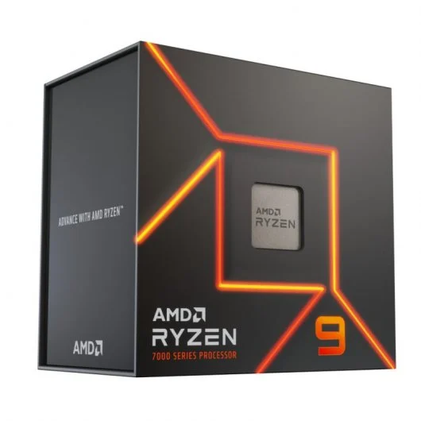

100 - Intel i9 13900K

96 - AMD R9 7950X

95 - AMD R7 5800X 3D
90 - AMD R9 7900X

80 - Intel i7 13700KF

78 - AMD R7 5950X
Los procesadores valorados en esta página están calificadas de 1-100 siendo 100 el rendimiento bruto máximo del procesador en trabajo multinúcleo, vamos a dejar de lado la potencia mononúcleo ya que la carga real en los procesadores recae siempre sobre varios núcleos a la vez. Los resultados de clasificación están obtenidos de una mezla de pruebas sintéticas que estresan al máximo los procesadores como cinebech R20 o R23. Tambien se puede apreciar que estan en tarjetas de diferentes colores según el fabricante. Al estar hablando de gama alta entendemos procesadores con precios por encima de 450€.